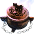

⚔
Broken Ranks
Fandom Wiki
Интерактивная вики
·
Все страницы

Кадило уруков / Кадило Орды
Предметы
/ Разное
Открыть в интерактивной вики →
Вес
1
Описание
Требуется для призыва
Драугул
и
Ивравул
. Разместить в чаше призыва.
Предмет для распыления испарений из разных трав и не только.
Где найти
Город Призрачных Уруков